3. Funcionamiento
3.1 Pestaña Cooperativa
A continuación vamos a ver como se pueden realizar las distintas funciones que se pueden realizar dentro de la app:
3.1.1 Añadir Cooperativa

Este es el botón que se utiliza para añadir cooperativas a la base de datos. Para poder realizar esto debemos introducir información de la cooperativa en el formulario que hay a la izquierda del botón, en concreto la ciudad, el nombre y el horario. Los campos idCooperativa y kgTotales no se rellenan ya que idCooperativa es un campo que se genera solo y kgTotales es un campo que por defecto su valor es 0.0.
Si ha introducido los valores correctamente saltaría la siguiente ventana:
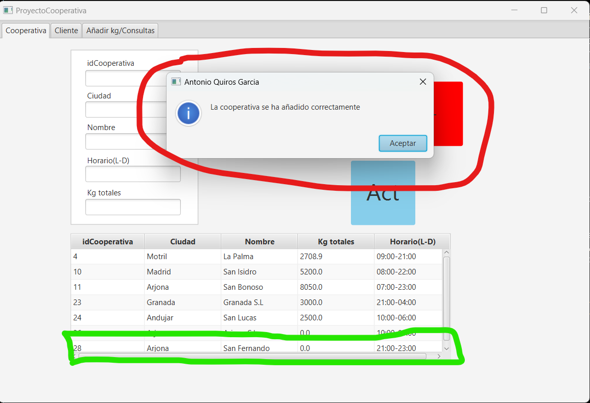Podemos ver también, en la fila rodeada de verde, que al añadir una cooperativa automáticamente se muestra en la tabla.
3.1.2 Eliminar Cooperativa
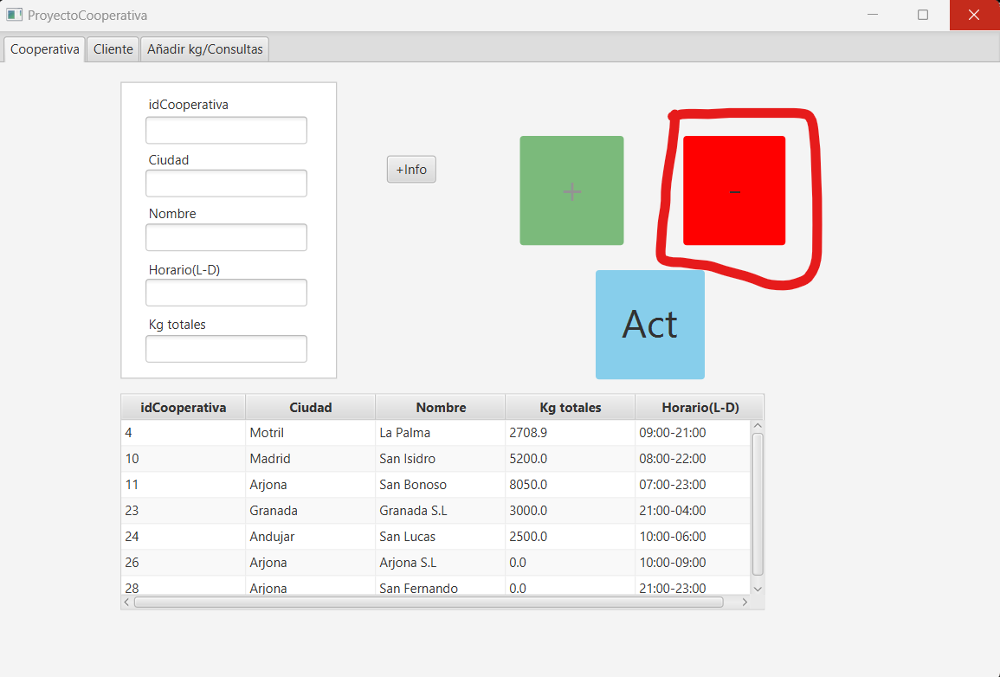Este es el botón que se utiliza para eliminar cooperativas de la base de datos. Para ello, la forma mas fácil de hacerlo es pulsando en la tabla sobre la cooperativa que deseas eliminar ya que se rellena su información automáticamente en el formulario:
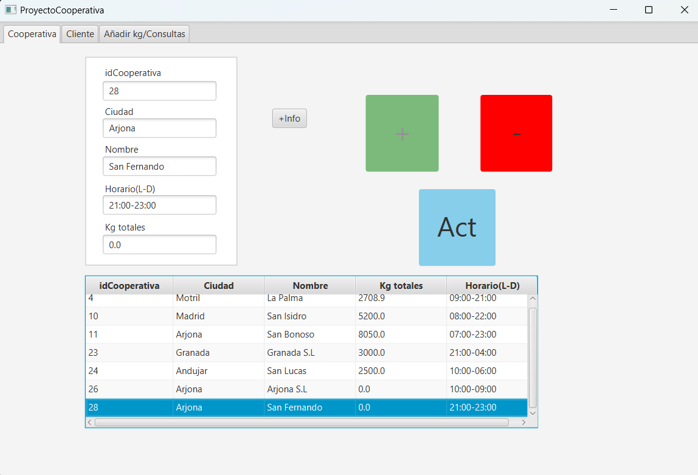Una vez seleccionada la cooperativa, se pulsa el botón y desaparece de la tabla y de la base de datos. Si la acción se realiza correctamente aparecerá una ventana indicándolo.
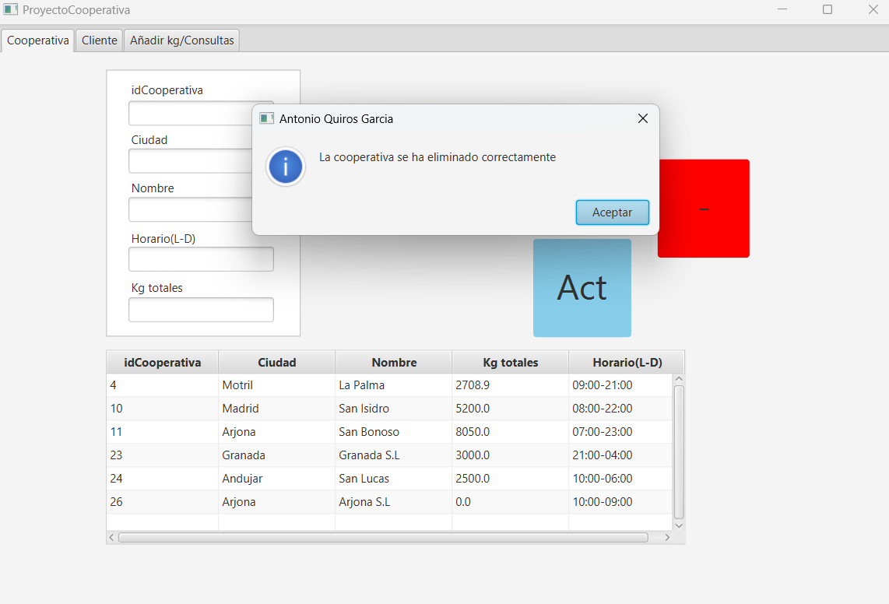3.1.3 Actualizar Cooperativa
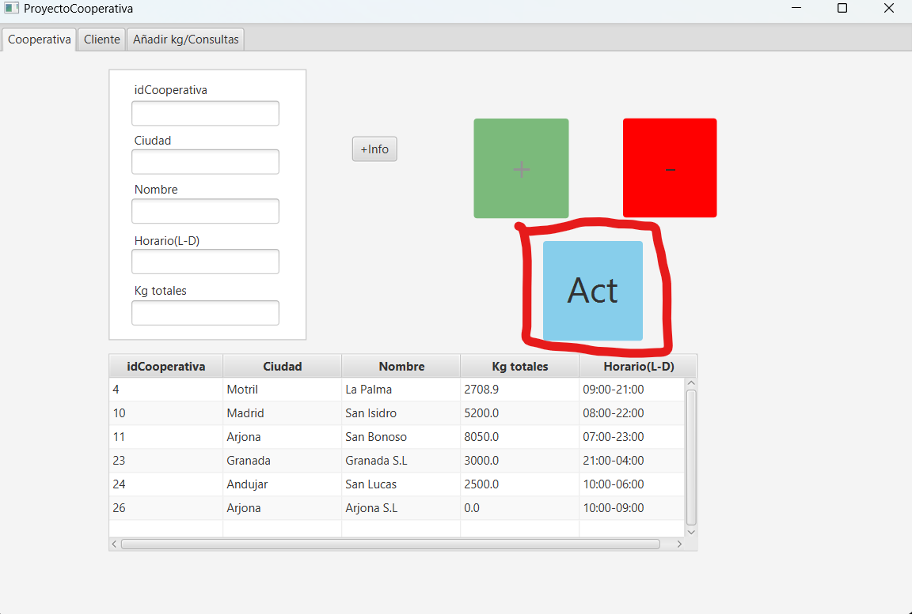Este es el botón que se utiliza para actualizar datos de las cooperativas. La manera de hacer esto es pulsando sobre la cooperativa que deseas actualizar, para que se rellenen sus datos en el formulario y ahí, modificar los datos que necesites.

En este caso hemos seleccionado la cooperativa con id 26 y le hemos modificado los datos, si todo es correcto al pulsar el botón aparecerá el siguiente mensaje:

3.1.4 Informe
En esta pestaña, se encuentra un botón llamado "+info", en el que, al pulsarlo, aparece un pequeño informe con los datos de las cooperativas y un pequeño gráfico en el que se muestra cual tiene más kgTotales

 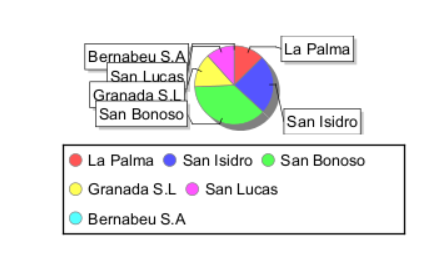
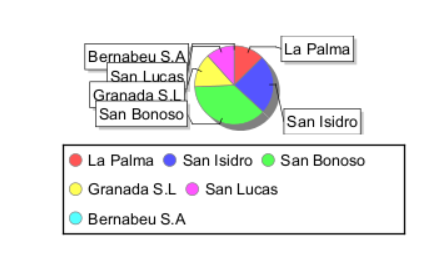
3.2 Pestaña Cliente
3.2.1 Añadir Cliente
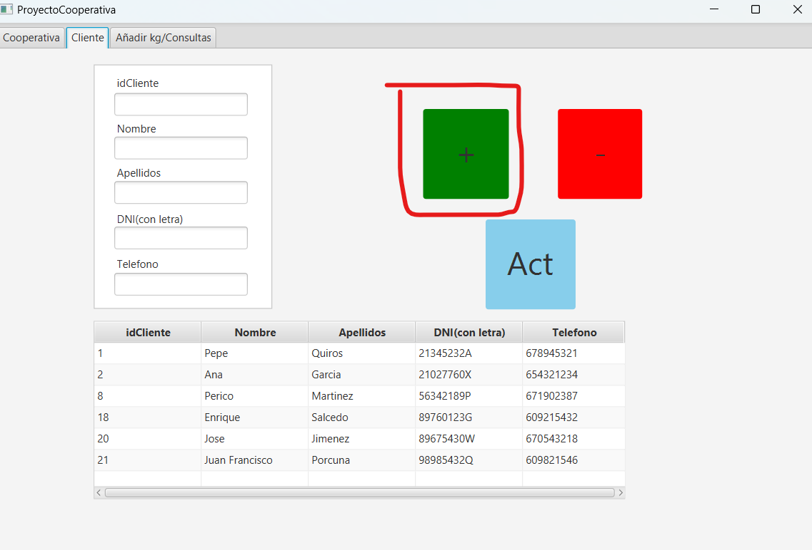Este es el botón que se utiliza para añadir clientes a la base de datos. La forma correcta de hacerlo es añadiendo información sobre el cliente en el formulario de la izquierda. Es necesario completar todos los campos excepto el campo idCliente, ya que es un campo que se rellena automáticamente. Una vez ya completado el formulario, se pulsa el botón, y si los datos son correctos salta el siguiente mensaje:

Abajo, rodeado de verde, podemos ver el cliente que ha sido añadido
3.2.2 Eliminar Cliente

Este es el botón que se utiliza para poder eliminar clientes de la base de datos. La forma correcta de hacer esto es pulsando sobre el cliente que deseamos eliminar ya que haciendo esto, el formulario se autocompleta con la infromación del cliente
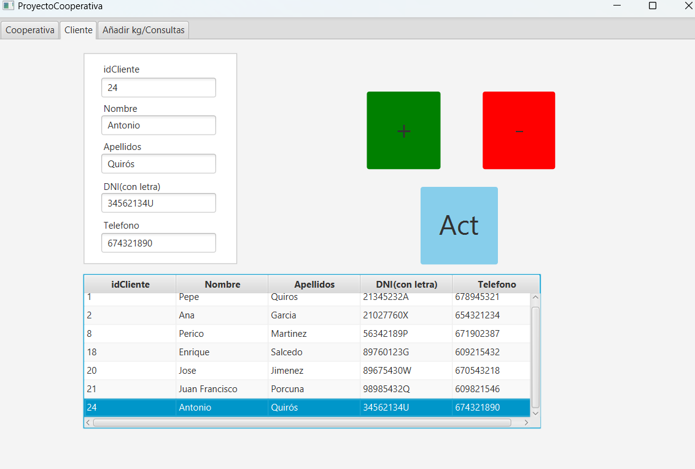Una vez hecho esto, se pulsa el botón de eliminar y, si todo está correcto, debería salir un mensaje confirmando la acción y el cliente desaparecería automáticamente de la tabla.
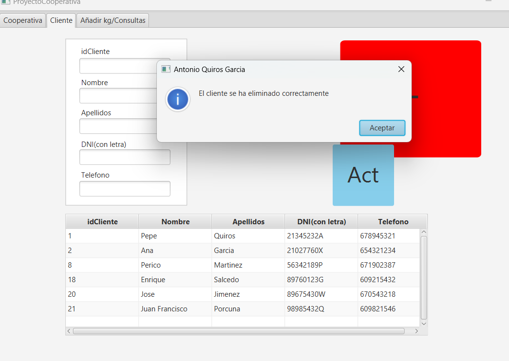3.2.3 Actualizar Cliente

Este es el botón que se utiliza para actualizar los datos de un cliente. La forma correcta de hacer esto es pulsando sobre el cliente que deseas actualizar y a continuación, cambiar los datos que desees.
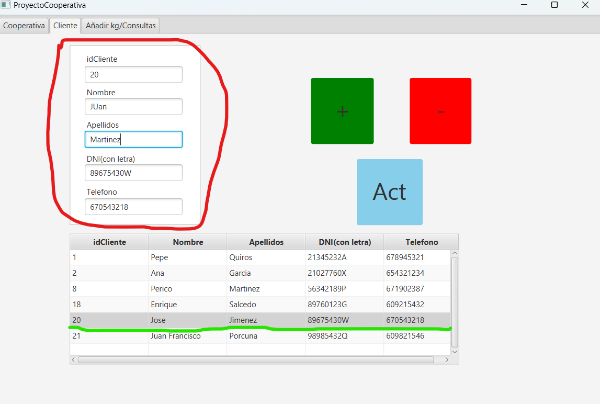Una vez hecho esto, si los datos son correctos,le aparecerá un mensaje confirmando la operación.
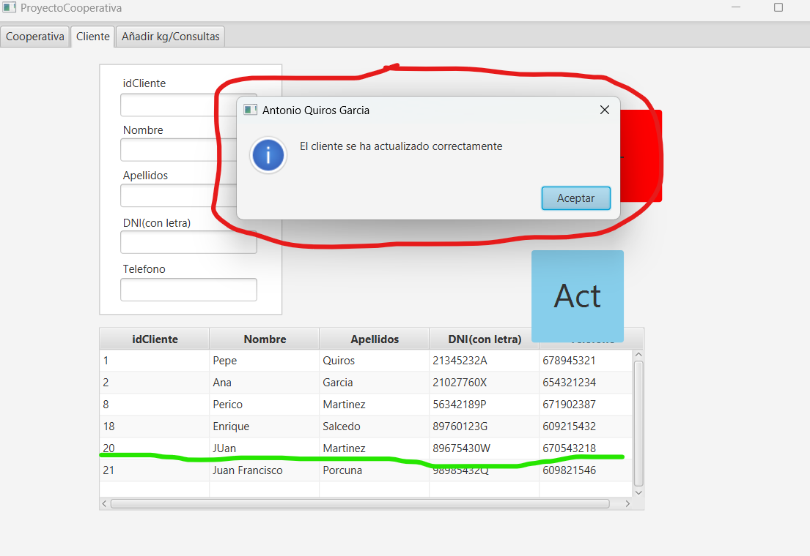3.3 Pestaña Consultas
3.3.1 Agregarkg
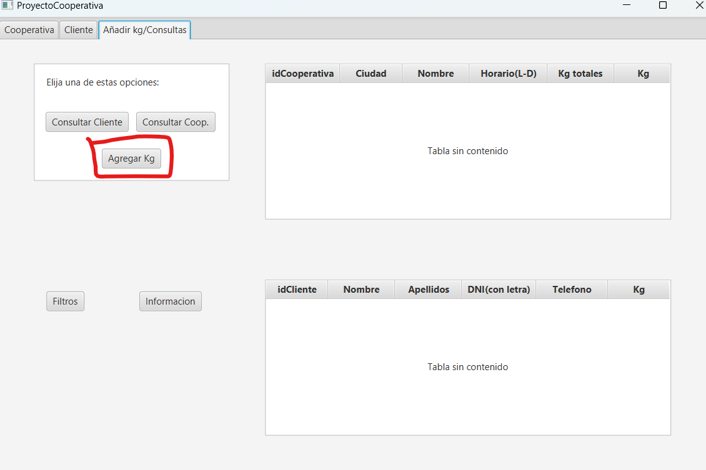Para poder agregarKg a una cooperativa, se debe pulsar el botón marcado en la imagen. Una vez pulsado, se mostrará un pequeño formulario en el que se pide id del cliente que va a añadir los kg, id de la cooperativa a la que van a ser añadidos los kg y por último la cantidad de kg a añadir.
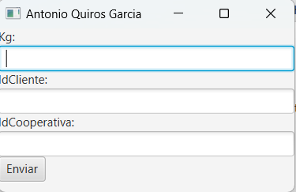Cunado se rellena el formulario, primero se comprueba que los id introducidos existan dentro de la Base de Datos, en caso contrario se mostrará un mensaje de error. Si todo está correcto se mostraría un mensaje confirmando la operación:

3.3.2 Consultar Cliente

Para poder consultar cuantos kg ha cargado un cliente y además ver las cooperativas a los que los ha llevado, se pulsa en en botón que se indica en la imagen anterior. Al pulsar el botón se muestra un formulario que pide la id del cliente que deseas consultar.
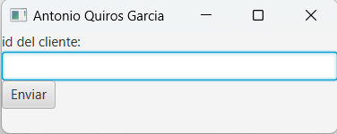Una vez introducido el id, se pulsa en "Enviar" y si el id existe en la Base de Dtaos, se muestra la información en las tablas de la derecha:

3.3.3 Consultar Cooperativa
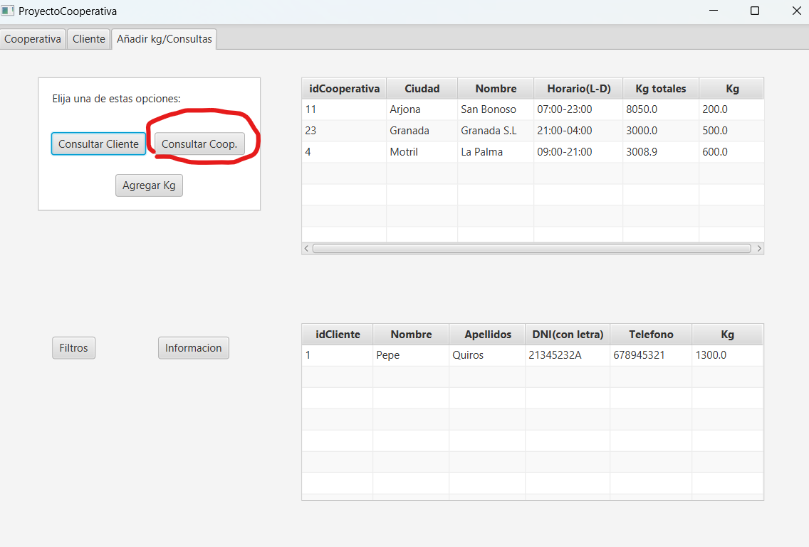Para poder consultar la infomación de las cooperativas junto a los clientes que les han llevado kg se pulsa en el botón indicado en la imagen. Una vez se pulse, salta un pequeño formulario que pide la id de la cooperativa a consultar:

Una vez introducido el id se comprueba que exista en la Base de Datos y si existe, se muestra la información en las tablas de la derecha:

3.3.4 Filtros
En la pestaña Consultas, hay un botón llamado Filtros que al pulsarlo abre un formulario que pide kgTotales maximos y kgTotales minimos. Esto lo que hace es que muestra en un informe las cooperativas en las que sus kgTotales están dentro de ese rango.
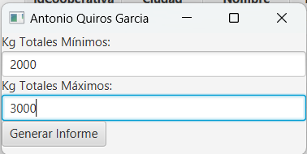
3.3.5 Información
En esta pestaña, también hay un botón llamado Información que, al pulsarlo, muestra un informe con información relacionada con los clientes, las cooperativas y los kg añadidos.
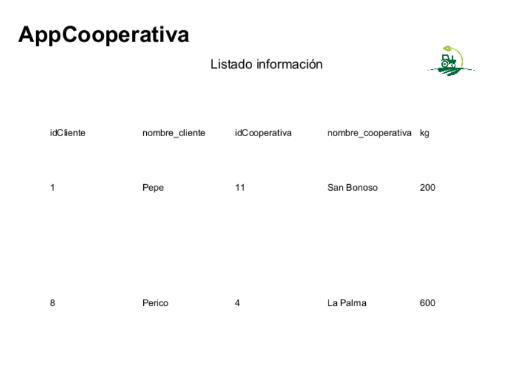4. Solución de problemas
En esta parte vamos a hablar sobre algunos problemas que deberías de tener en cuenta a la hora de utilizar la aplicación:
- En la pestaña Cliente, debe tener en cuenta que el campo DNI solo admite 9 caracteres, es decir, si introduces más de 9 solo se cogerán los 9 primeros.
- En la pestaña Cooperativa, el horario debes introducirlo tu mismo con el formato que se ve en los demás registros, ya que no está establecido para que se solo se pueda poner así.